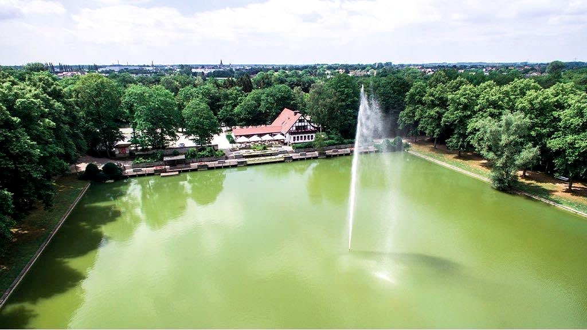
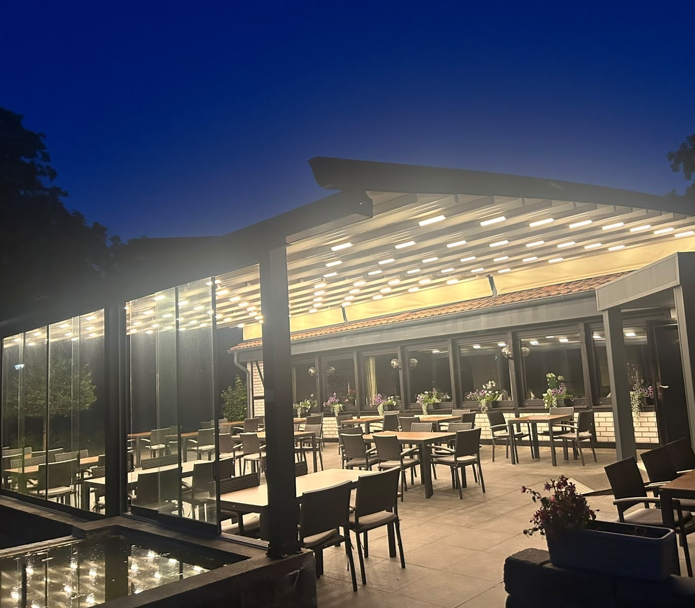
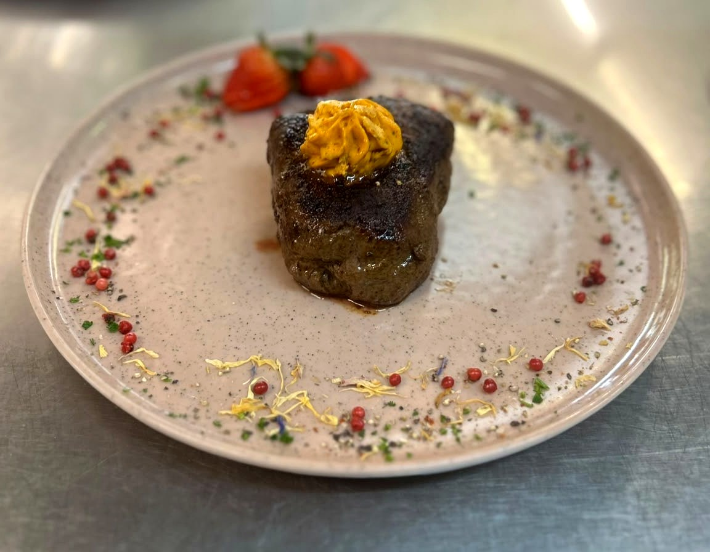

Am Teich.Vom Grill.
Landrestaurant und Café im Ahlener Stadtwald. Terrasse über dem Wasser, Küche vom Rost, Salatbuffet zu jedem Hauptgericht.
- Ahlen · Am Stadtwald
- 4,6 ★ · 705 Bewertungen
- Dienstag Ruhetag
Täglich ab 11:30 Uhr
Dienstag ist Ruhetag

Der Ort
Ein Haus am Wasser.
Erst der Wald, dann der Damm. Dann liegt der Teich vor Ihnen und an seinem Ufer ein Fachwerkhaus mit einer Terrasse, die bis ans Wasser reicht.
Seit über zehn Jahren.
Ein Familienbetrieb: derselbe Wirt, dieselbe Küche. Wer aus Ahlen kommt, ist in ein paar Minuten hier.
Kostenlose Parkplätze direkt am Haus.

Draußen sitzen
Überdacht. Windgeschützt. Am Wasser.
An sonnigen Tagen gibt es genug Schatten. Und wenn das Wetter kippt, sitzen Sie trotzdem trocken.
„Schattenplätze mit tollem Ausblick. Das Essen schmeckt wirklich super.“
Dominic S. · Google-Rezension

Aus der Küche
Alles kommt vom Grill.
Steaks englisch, medium oder durch. Sie sagen, wie.
Und dazu das Buffet.
Rund zehn Zutaten, drei Dressings. Zu jedem Hauptgericht, so oft Sie möchten.
Die Karte
Ein Auszug.
Steaks, Balkan-Spezialitäten, Platten für zwei. Dazu Schnitzel, Fisch, Nudeln und Vegetarisches.
Vom Grill
- Filetsteakab 29,00 €200 oder 300 Gramm
- Rumpsteakab 24,50 €auch mit Zwiebeln und Bratkartoffeln
- Argentinischer Teller27,50 €3 Rindersteaks mit Kräuterbutter und Bratkartoffeln
Vom Balkan
- Cevapcici16,00 €mit Ajvar, Zwiebeln, Pommes und Djuvecreis
- Grillteller20,50 €Spieß, Cevapcici, Schnitzel, Pljeskavica und Speck
Für zwei
- Steak-Platte58,00 €verschiedene Steaks mit Grillgemüse und Beilagen
- Balkan-Platte48,00 €so reichlich, dass ein Kind mitisst
Alle Gerichte mit Preisen.

Für größere Runden
Wenn es mehr als ein Tisch wird.
Geburtstag, Familienfeier, Betriebsessen: Neben Terrasse und Gastraum gibt es einen eigenen Saal.
Sagen Sie einfach, wie viele Sie sind und wann. Den Rest klären wir am Telefon.
Was Gäste sagen
0
Bewertungen bei Google, im Schnitt 4,6.
„Sehr gute Steaks gegessen. Auf den Punkt gegart. Sehr leckere Soßen. Preis-Leistung top.“
„Die Platten für 2 Personen sind sehr vielfältig und reichlich. Stets aufmerksam, freundlich und zügig.“
„Nach unserem ersten Besuch waren wir bereits ein zweites Mal dort, und auch dieses Mal war alles perfekt.“
Gut zu wissen
Damit der Besuch passt.
- Terrasse am Wasserüberdacht und windgeschützt
- Kostenlos parkeneigener Parkplatz am Haus
- BarrierefreiParkplatz, Eingang, WC, Sitzplätze
- Hunde willkommendrinnen wie draußen
- Karte & kontaktlosEC, Kreditkarte, NFC
- Für Familien & FeiernPlatz für große Runden
| Montag | 11:30 – 22:00 |
|---|---|
| Dienstag | Ruhetag |
| Mittwoch | 11:30 – 22:00 |
| Donnerstag | 11:30 – 22:00 |
| Freitag | 11:30 – 22:00 |
| Samstag | 11:30 – 22:00 |
| Sonntag | 11:30 – 21:00 |
Tisch sichern
Am Wochenende besser reservieren.
Tische vergeben wir ausschließlich am Telefon, nicht per E-Mail oder Nachricht.
02382 8551018 Jetzt anrufenHerkommen
Am Stadtwald 6.
Landrestaurant · Café Zur LangstAm Stadtwald 6
59227 Ahlen Route öffnen
- Kostenlose Parkplätze direkt am Haus
- Wenige Minuten aus der Ahlener Innenstadt
- Beliebter Halt für Motorrad- und Radtouren